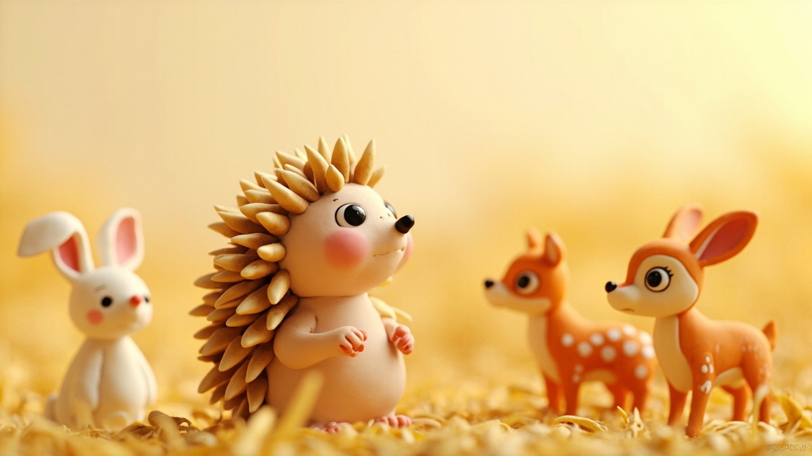
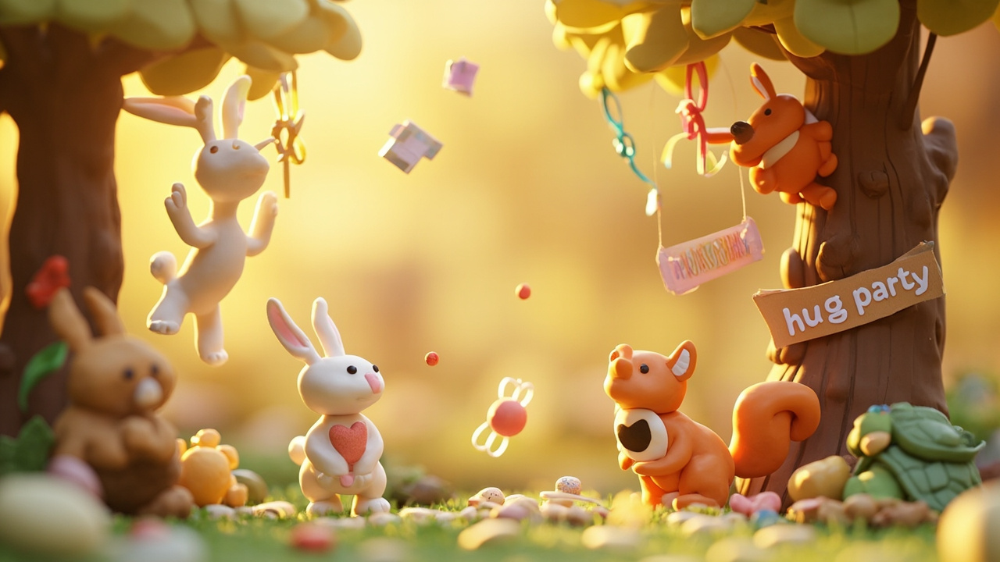
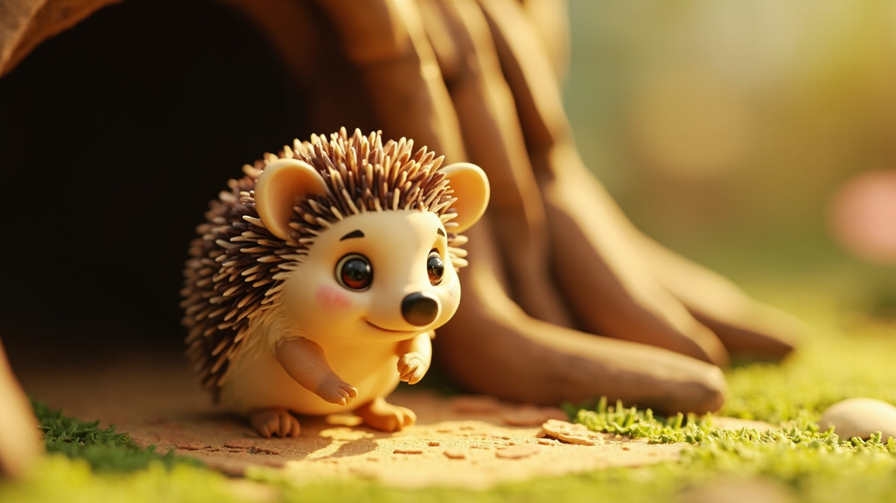
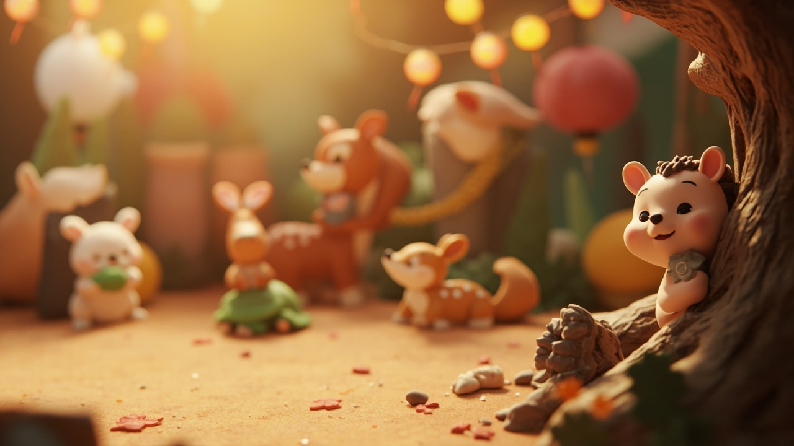

小刺猬圆圆的拥抱
森林睡前故事 · 童声朗读版
点击翻页 · 开始阅读

在一片金灿灿的麦田边上，住着一只小刺猬，名字叫圆圆。

圆圆有一双亮晶晶的小眼睛，一个总是翘起来的小鼻子，还有一身又密又硬的刺。小动物们见了都会说："哇，圆圆，你的刺好锋利呀！"
圆圆听了总是笑着点点头。可是到了晚上，她一个人蜷在树洞里悄悄想：要是我能像小兔子那样软软的，是不是就能抱抱朋友了？

有一天，森林里要办一场拥抱派对。小兔子蹦蹦跳跳地发请帖，小松鼠叽叽喳喳地挂彩灯，小乌龟也搬来三块小饼干。
圆圆也收到了请帖，上面画着一颗大大的爱心。她高兴极了，可又犯起了愁——我的刺，会不会扎疼别人呢？

她在家门口走来走去，走了两百零六步，最后叹了口气，决定还是去，只是远远站着看就好。

派对开始啦！小兔子抱小松鼠，小松鼠抱小鹿……每个人都笑得像开了花。圆圆站在大橡树后面，嘴角也翘起来，可脚就是迈不动。
"圆圆！你来啦！"小兔子耳朵一竖，蹦了过来。"我……我就在旁边看看就好。"圆圆小声说，把身子缩了缩。
小兔子歪着脑袋想了想，忽然跑回派对桌，翻呀翻，找出一条又厚又软的红色围巾——那是猫头鹰奶奶冬天织给大家的。她把围巾一圈一圈地裹在圆圆的刺上："这样就不扎啦！"
圆圆试探着张开短短的小手臂——噗，什么也没扎到！小兔子一下子扑进她的怀里，开心地晃了晃长耳朵。
其他小动物看见了，全围了过来。"我也要抱圆圆！""我也要！"
小松鼠说："好像抱着一朵棉花糖！"小鹿说："圆圆的刺被围巾包住以后，像小太阳的射线，好可爱！"
圆圆被大家抱了一圈又一圈，脸红得像一颗小草莓。她从来不知道，原来拥抱是这么温暖的事情。
那天晚上，圆圆回到树洞，没有蜷成一团，而是把那条红围巾叠好放在枕头旁边。
🦔 晚安 🦔
窗外，月亮又大又圆，像另一个圆圆在天空里对她微笑。
"晚安。"圆圆小声说，然后轻轻地、安心地闭上了眼睛。
点击书页左/右半区翻页 · 或按 ← → 方向键